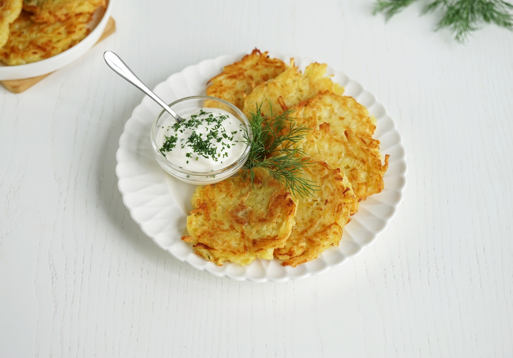

Драники
Классические картофельные оладьи, подаваемые со сметаной.
Классические картофельные оладьи, подаваемые со сметаной.
Картофельная котлета с начинкой, обычно из отварных грибов или яиц.
Небольшие изделия из теста, приготовленные из муки, картофеля или творога с добавлением яиц и соли. Их отваривают в воде или бульоне, иногда с начинкой, и подают как самостоятельное блюдо, гарнир или добавку к супам.